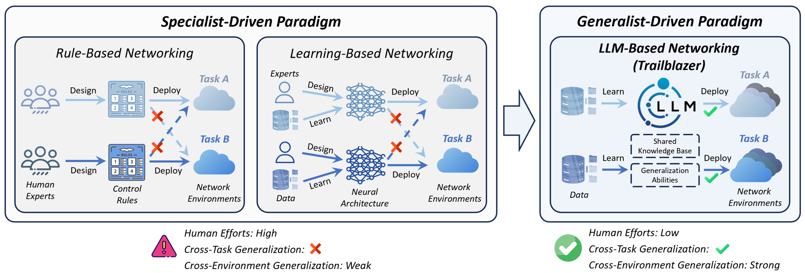

Large Language Models as Generalist Policies for Network Optimization
- Duo Wu1
- Linjia Kang1
- Zhimin Wang1
- Fangxin Wang2
- Wei Zhang3
- Xuefeng Tao3
- Wei Yang3
- Le Zhang3
- Peng Cui4
- Zhi Wang1* 1Shenzhen International Graduate School, Tsinghua University
2School of Science and Engineering, The Chinese University of Hong Kong, Shenzhen 3Bytedance 4Department of Computer Science and Technology, Tsinghua University
*Corresponding Author

Trailblazer (开拓者) is the pioneering framework that grounds LLMs as generalist policies for network optimization to achieve strong generalization across diverse tasks and environments.
Trailblazer signifies our goal of forging the first path in LLM-driven generalist network policies, establishing a framework for both academia and industry to advance the integration of LLMs into real-world network services. 😊
Abstract
Designing control policies to ensure robust network services is essential to modern digital infrastructure. However, the dominant paradigm for network optimization relies on designing specialist policies based on handcrafted rules or deep learning models, leading to poor generalization across diverse tasks and environments. In contrast, large language models (LLMs), pretrained on Internet-scale corpora, provide a rich and unified knowledge base that encodes fundamental networking principles. Combined with their emergent abilities in generalization to unseen scenarios, LLMs offer a transformative foundation for generalist network policies that can generalize across diverse tasks and environments with minimal adaptation. In this paper, we present Trailblazer, the first systematic framework to realize such a generalist policy for networking. Trailblazer incorporates a network alignment scheme to ground the LLM in specific networking tasks, and an adaptive policy collaboration mechanism that offloads simple control cases from the LLM to a lightweight policy for computational efficiency. Through extensive simulations and large-scale real-world online evaluation on Douyin (the Chinese version of TikTok), Trailblazer, powered by a single LLM, demonstrates stronger cross-task and cross-environment generalization than conventional specialist policies. Our results validate LLMs as the foundation for generalist network policies, and position Trailblazer as the first step toward the generalist-driven paradigm that enables strong generalization with minimal efforts in policy design.
 Key findings of this paper. The generalist-driven paradigm established by Trailblazer leverages a single LLM–equipped with strong generalization abilities and a shared knowl edge base encoding universal networking principles–to enable low-effort policy design and achieve strong cross-task and cross-environment generalization.
Method
 Overview of our proposed framework Trailblazer. (Up) The NIOKA in Trailblazer to
address the misalignment between the LLM and networking. The network state encoder is introduced
to project non-textual network information into the same feature space as language tokens for the
LLM, while the network action decoder is used to map the LLM output feature vectors into specific
network actions. Based on the proposed offline reinforcement fine-tuning algorithm, the LLM is fine-tuned over an offline experience dataset collected by evaluating conventional network policies across
diverse network environments, with rewards or near-optimal actions as the guiding signals. (Low) The
APC in Trailblazer for efficient LLM deployment, where the fine-tuned LLM collaborates with a
conventional policy for intelligent and efficient network control. The heart of APC is a scheduler for
adaptively flow request routing. The scheduler evaluates the network conditions of each request (e.g.,
latency). Requests under poor conditions are deemed as difficult cases and allocated to the LLM for
intelligent control, while those under stable conditions are handled by a conventional policy for fast
processing. To reduce the per-request processing latency, the LLM will process requests in batches.
Overview of our proposed framework Trailblazer. (Up) The NIOKA in Trailblazer to
address the misalignment between the LLM and networking. The network state encoder is introduced
to project non-textual network information into the same feature space as language tokens for the
LLM, while the network action decoder is used to map the LLM output feature vectors into specific
network actions. Based on the proposed offline reinforcement fine-tuning algorithm, the LLM is fine-tuned over an offline experience dataset collected by evaluating conventional network policies across
diverse network environments, with rewards or near-optimal actions as the guiding signals. (Low) The
APC in Trailblazer for efficient LLM deployment, where the fine-tuned LLM collaborates with a
conventional policy for intelligent and efficient network control. The heart of APC is a scheduler for
adaptively flow request routing. The scheduler evaluates the network conditions of each request (e.g.,
latency). Requests under poor conditions are deemed as difficult cases and allocated to the LLM for
intelligent control, while those under stable conditions are handled by a conventional policy for fast
processing. To reduce the per-request processing latency, the LLM will process requests in batches.
Results
We compare our generalist approach Trailblazer powered by a single LLM with task-specific policies on two represenative tasks (adaptive bitrate streaming ABR, cluster job scheduling CJS) and heterogeneous environments.
Finding 1: Trailblazer successfully generalizes across heterogeneous tasks with a single LLM.

Conventional specialist policies fail to generalize across different tasks due to the task-specific design. By copmarison, powered by a single LLM, Trailblazer successfully generalizes across heterogeneous networking tasks, achieving stronger cross-task generalization. These results demonstrate that LLMs can serve as a unified foundation for generalist network policies, breaking the task-isolation barrier of the specialist paradigm.
Finding 2: Trailblazer achieves stronger generalization than specialist policies across heterogeneous environments.

To assess whether a generalist policy can achieve stronger cross-environment generalization, we evaluate Trailblazer across various challenging out-of-distribution (OOD) test environments. By leveraging the strong consistently outperforms all baselines in terms of average values and distributions across all cases.
Finding 3: Trailblazer can not only operate reliably in production network environments but also introduce industrial improvements in service quality.

We deploy Trailblazer in Douyin’s real-time congestion control (CC) service for large-scale online A/B tests over three weeks, serving 150,000+ users across 100+ cities and accumulating over 1,200 days of video playback time. Results show that Trailblazer outperform VICC, a highly optimized policy designed for Douyin, in key industrial performance metrics.
Insights
Insight 1 - Early Saturation
Unlike the scaling law in NLP, small-scale LLMs can achieve strong generalization in networking. Hence, we can trade efficiency with small LLMs without sacrificing performance.
Insight 2 - Selective Invocation

Selectively invoking the LLM can boost efficiency without compromising performance. Hence, this reveals an important principle: invoking the LLM for network control when necessary rather than implementing per-request control.